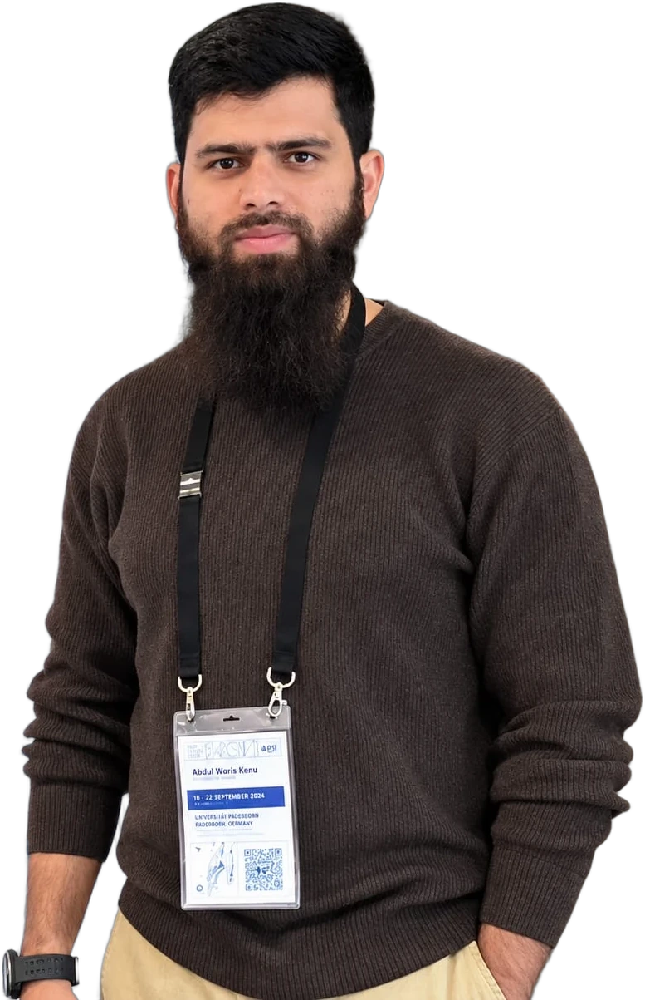
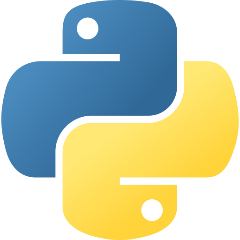

Python & Google Colab: a practical, no-installation starting point.
Structured Colab notebooks you keep and revisit.
Materials, structures, energy, transport, water and geotechnics.
Shared after each session; available until two weeks after the course ends.
Validation, limitations and physical plausibility, not just accuracy.
We already understand this problem. We have the ingredients, we have age, and we measure a response.
We already build models. We use equations, correlations, numerical models, experiments and design standards.
Machine learning doesn’t replace engineering thinking. It gives us another way to represent relationships when we have sufficient data.
Can a system assist an engineer in deciding whether a structure requires attention?
Can we learn from historical inspection data to classify defects?
Can a neural network learn complex patterns directly from images of structural defects?
Field of study that gives computers the ability to learn without being explicitly programmed.Arthur Samuel · 1959
| Input (X) | Output (Y) | Application | |
|---|---|---|---|
| {{i:arrow-right}} | spam? (0/1) | Spam filtering | |
| Audio | {{i:arrow-right}} | text transcript | Speech recognition |
| English | {{i:arrow-right}} | Arabic, Urdu, Spanish… | Machine translation |
| Ad, user info | {{i:arrow-right}} | click? (0/1) | Online advertising |
| Mix design + age | {{i:arrow-right}} | strength (MPa) | Civil engineering: our course |
from infinitely many possible outputs.
from a small number of possible outcomes.
Group similar data points together.
Find unusual data points.
Compress data using fewer variables.
| Cement | Slag | Fly ash | Water | SP | Coarse agg. | Fine agg. | Age (d) | Strength MPa |
|---|---|---|---|---|---|---|---|---|
| 540.0 | 0.0 | 0.0 | 162 | 2.5 | 1040 | 676 | 28 | 79.99 |
| 540.0 | 0.0 | 0.0 | 162 | 2.5 | 1055 | 676 | 28 | 61.89 |
| 332.5 | 142.5 | 0.0 | 228 | 0.0 | 932 | 594 | 270 | 40.27 |
| 332.5 | 142.5 | 0.0 | 228 | 0.0 | 932 | 594 | 365 | 41.05 |
| … 1,030 mixes in total · quantities in kg/m³ | ||||||||
No paid language licence is required.
Readable syntax that is close to plain English.
NumPy, pandas, Matplotlib, scikit-learn and more.
Data analysis, visualisation, ML and scientific computing.

We learn enough Python to ask better engineering questions and build data-driven models.
The name doesn’t come from the snake, even though the logo and community often use snake imagery.
Python was named after the British comedy group “Monty Python’s Flying Circus”, a favourite of Python’s creator, Guido van Rossum.
He wanted a name that was short, unique and a little mysterious. “Python” felt just right.
We focus on engineering ideas rather than installation and environment setup.
Assumption: mix quantities in kg/m³. Lower w/c generally means higher strength.
Start in a browser.
Everyone follows the same notebook sequence.
Links make distributing notebooks straightforward.
Run cells and inspect results together.
More time for data and interpretation.
No environment management at the outset.
| Feature | Google Colab | Anaconda + Jupyter | MATLAB |
|---|---|---|---|
| Initial setup | Browser; no local install to start | Install and manage a local distribution | Installation and licence access may be required |
| Language | Python | Python (with R tools available) | MATLAB |
| Packages / tools | Common libraries available; some setup may be needed | Flexible packages and environments | MATLAB toolboxes and add-ons |
| Best fit here | Shared, low-friction workshop | Local work and controlled environments | Existing MATLAB workflows |
We introduce each tool when an engineering question calls for it.
The goal is not to memorise every function. It is to understand what each step does and whether its result makes engineering sense.
cement = 350 # kg/m³ water = 180 # kg/m³ water_cement_ratio = water / cement print(water_cement_ratio)
The computer performs arithmetic; the engineer interprets what the ratio means.
Change the water content. Observe what changes, and what the calculation alone cannot tell you.
An accessible, widely used language for scientific computing and ML.
A browser-based notebook environment with minimal setup.
The goal is meaningful analysis, not merely code that runs.
See you in session 02: From Raw Engineering Data to an ML-Ready Dataset.